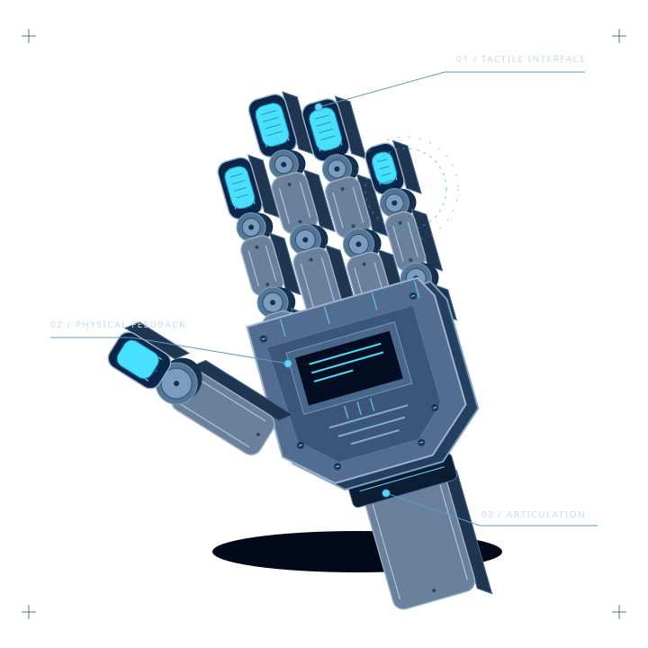
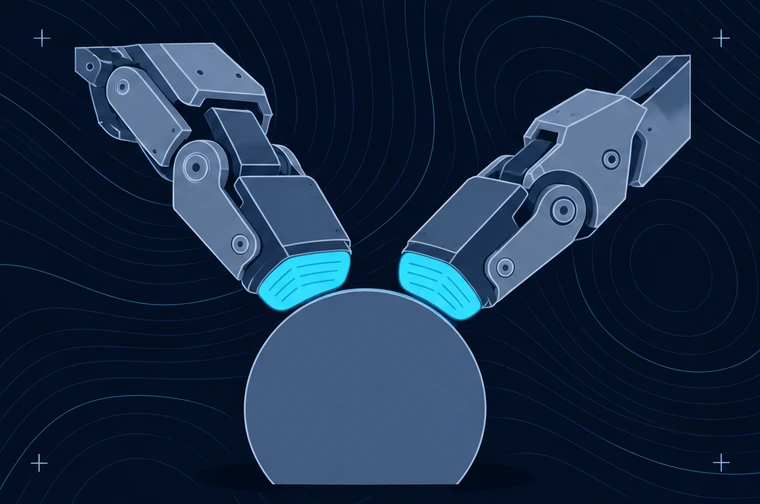
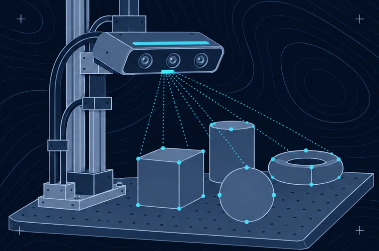
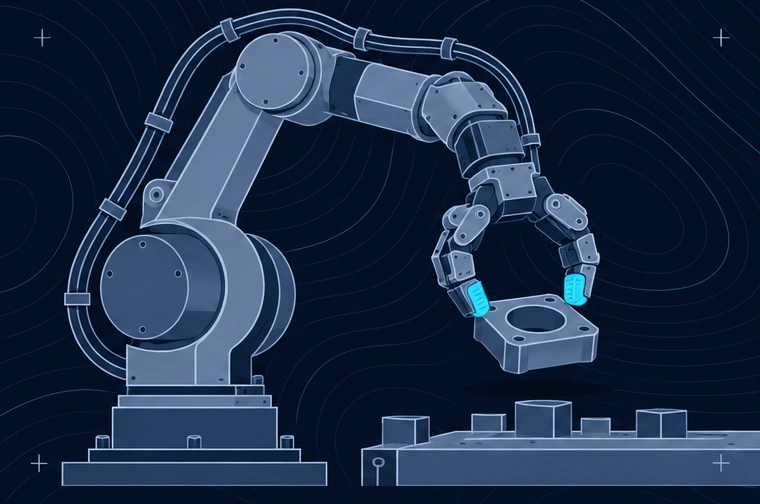

+ More capable machines start with a deeper connection to the physical world.

Fig. 01 / The physical interfaceConcept study
FIELDFORM LABS / RESEARCH DIRECTION↗
Hardware × Infrastructure × Robotics Building toward San FranciscoExplore our vision ↓
01 / Our conviction+
The real world doesn’t follow a script.
Objects slip. Environments change. A plan meets something it has never seen before.
Robotics has made extraordinary progress. But dependable autonomy still depends on what a machine can feel, how it learns from physical experience, and what happens when things go wrong.
We see hardware and infrastructure as essential parts of closing that gap.
Our research direction spans the connected challenges that hold autonomous robotics back.
01 / Interaction↗

Tactile sensing / Illustrative concept
A better sense of touch.
Dexterous manipulation starts where hardware meets the world. We’re focused on touch and the physical feedback that makes complex interaction possible.
Dexterity and tactile sensing
Unpredictable environments
02 / Learning↗

Physical learning / Illustrative concept
Learning grounded in reality.
Physical intelligence needs physical experience. Our focus connects richer training data with the challenge of reasoning beyond controlled environments.
Physical training data and the reality gap
Planning and physical reasoning
03 / Dependability↗

Robot manipulation / Illustrative concept
Capability that holds up.
Real deployment asks more of a robot than a successful demo. We’re exploring the hardware foundations for recovery, predictable behavior, and sustained operation.
Failure recovery and safety assurance
Cost, endurance, and maintainability
These are our areas of focus, rather than claims of solved capabilities or released products.
Our ambition+
Giveintelligence abetterway totouchtheworld.
The next chapter of robotics will be built at the intersection of intelligence and physical capability.
03 / Our approachA system, not a single component
Start with the world. Build from there.
Our development philosophy connects physical constraints, hardware design, and the evidence needed to move forward.
01
Understand the constraint.
Start with the moments where autonomy breaks down. Define what the machine needs to sense, understand, or withstand.
02
Build the physical layer.
Develop hardware and infrastructure around the challenge, treating sensing, data, and operation as connected parts.
03
Let reality set the bar.
Use physical evaluation to guide iteration, with attention to failure modes and the demands of practical deployment.
Built for the robotics ecosystem
For the people building what comes next.
We’re focused on commercial robotics companies building autonomous systems, and the infrastructure those systems need to succeed.
Our ambition is to build in San Francisco, alongside the researchers, engineers, and investors shaping physical AI.
A little more about what we’re building and where we’re headed.
What is Fieldform Labs building?+
We are a physical AI startup building hardware and infrastructure for the robotics industry. Our direction is to help close the gap between intelligent models and capable physical systems.
Who is this for?+
Our intended audience is commercial robotics companies developing autonomous systems. This website also introduces our direction to investors, media, and the wider robotics community.
Which challenges are you focused on?+
Our focus includes dexterity and touch, unpredictable environments, physical reasoning, autonomous recovery, physical training data, the simulation to reality gap, safety, and the practical demands of hardware operation.
Why focus on hardware?+
Physical systems need a way to sense and act in the world. We believe that better hardware, developed alongside the right infrastructure, is essential to making progress on reliable autonomy.
How do data and simulation fit in?+
High quality physical training data and the gap between simulation and reality are part of our research direction. We are interested in how hardware and infrastructure can connect learning more closely to physical experience.
How can investors and media get in touch?+
Our contact section is intended for investment, press, and industry enquiries. This draft currently displays a placeholder email, which will be replaced with the company’s contact address.
Let’s build the next chapter+
The future is physical. Let’s get in touch.
For investment, media, and conversations about the future of robotics.